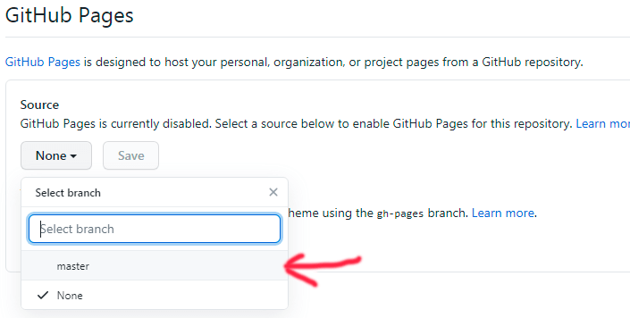

Ну во-первых нужно зарегестрироваться на гит хабе. После регистрации создаём новый репозиторий:
Далее нужно выбрать название для хранилища, например test-site2, и указать тип репозитория (у нас будет публичный). Обязательно устанавливаем галочку Initialize this repository with a README, а после нажимаем кнопку Create repository.
Репозиторий создан, теперь нужно загрузить файлы с кодом, для этого воспользуемся веб-интерфейсом Гитхаба. Нажмём кнопку Upload files.
Перетащим файлы в появившееся поле для загрузки.
По правилам, каждое изменение в репозитории мы должны сопроводить кратким описанием, что делает это изменение, например, «загружает файлы сайта». Добавим описание и нажмём кнопку Commit changes.
Готово! Сайт-портфолио залит на Гитхаб.
Остаётся настроить его, чтобы сайт можно было открыть в браузере. Для этого нужно перейти в настройки репозитория Settings, пролистать настройки вниз до раздела GitHub Pages и в выпадающем списке выбрать ветку master. Изменения сохраняются автоматически.
Давайте теперь попробуем открыть сайт в браузере. Он будет доступен по адресу: [ваш логин].github.io/[название репозитория]. В моём случае это будет адресс: https://sanekt.github.io/test-site2
Если вы захотите доработать сайт и опубликовать изменения, действовать вам нужно так. Сначала вы вносите изменения у себя на компьютере в редакторе, например в файле index.html.
Теперь вам нужно заново загрузить эту страницу на Гитхаб, добавив краткое описание, что делает изменение, например, «меняет текст на главной странице». Снова нажимаем Commit changes.
Через несколько секунд изменения появятся на сайте.